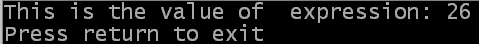

Alles, was einen Wert darstellt, kann in einem Ausdruck verwendet werden. Zum Beispiel können Befehle in Ausdrücken verwendet werden (Sie haben ja schon Erfahrung mit Operatoren und dem Befehl Str), sofern sie einen Wert zurückgeben. Es ist dann dieser Wert, der im Ausdruck verwendet wird.
Sie können Ihre Ausdrücke so komplex machen, wie Sie mögen (oder sie für bessere Lesbarkeit vollständig aufsplitten). PureBasic vereinfacht automatisch den Ausdruck, um die beim Ablauf Ihres Programms erreichte Berechnungsgeschwindigkeit zu steigern.
Das folgende Beispiel zeigt eine Vielzahl von Ausdrücken. Sie können den Quellcode hier finden.
OpenConsole()
; Ein einfacher Ausdruck
simple.l = 8
expression.f = simple * 3 + 2
; Ein komplexeres Beispiel
detail$ = "This is the value of "
var_name.s = " expression"
output_string.s = detail$ + var_name + ": " + StrF(expression)
PrintN(output_string)
PrintN("Press return to exit")
Input()
CloseConsole()
End

| Vorheriges Thema | Kapitel-Inhalt | Nächstes Thema |
|---|---|---|
| Operatoren Vorrang | Benutzerhandbuch Inhalt | Zusammenfassung |